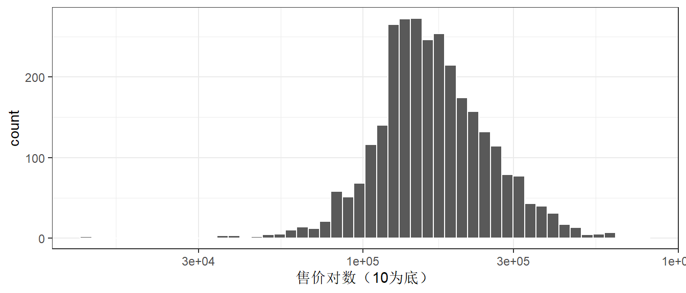
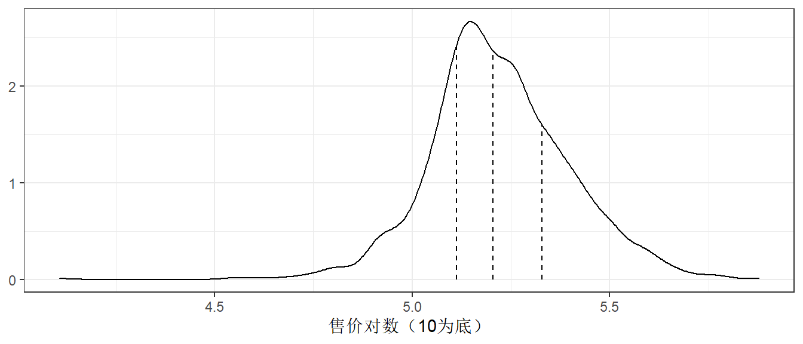

各位看客：
Learn-R 仍在写作流程中。本章节正在进行写作和结构调整，可能出现混乱或不完整的情况。
Learn-R 仍在写作流程中。本章节正在进行写作和结构调整，可能出现混乱或不完整的情况。
本章为Tidy Modeling with R的学习笔记。
一个模型的效用取决于它的还原能力，或将复杂关系简化的能力。 随着模型变得更加强大和复杂，也更容易犯隐蔽性错误。同样的原则也适用于编程。软件应该尽可能地保护用户不犯错误，使其轻松地做正确的事。易于正确适用和良好的方法实践是模型开发至关重要的两点。
按使用目的分类，模型可以大致分为：
描述模型：用于描述或说明数据的特征，这样的分析可能没有其他目的，只是直观地强调数据中的趋势或假象。
推断模型：用于为研究问题产生结论或探索特定的假设，类似于统计推断。
预测模型：用于对新数据进行尽可能地预测。按照模型开发方式，可以分为mechanistic model（机械性模型，利用数据估计方程未知参数）和empirically driven model(经验驱动模型，往往属于机器学习的范畴)。
将统计显著性作为衡量模型质量的唯一标准很危险。经过统计优化的模型可能具有较差的准确性或在其他衡量预测能力的指标上表现不佳。
预测性能往往与模型的拟合值和观测数据的接近程度有关。虽然描述模型和推断模型的主要目的可能与预测无关，但是不应该忽视它们的预测能力。如果有一个P值显著但是预测准确率惨淡的模型，我们应该多大程度上相信推论呢？
在建模之前，有几个关键阶段：
数据清洗：审查数据以确保数据符合项目的目标，具有准确性和恰当性。
探索性数据分析（EDA）：了解不同变量之间的关系，变量的分布、范围等属性。这个阶段要问的一个好问题是：“我是如何得到这些数据的？”。这个问题可以帮助了解手上的数据是如何抽样和筛选，以及这样的操作是否恰当。EDA可能与数据清洗有部分重叠。
明确模型目标和判断模型性能的方法，至少需要设定一个有针对性的性能指标。
图 5.1 展示了确定适当模型的典型路径。一般的阶段是：

探索性数据分析对建立高质量的模型至关重要。
# save(ames, file = "ames.rda")
load("ames.rda")Ames数据集包含了爱荷华州Ames市lowa的2,930个房产信息，主要包括：
我们根据掌握的信息，预测房子的销售价格。
ggplot(ames, aes(Sale_Price)) +
geom_histogram(bins = 50, col = "white")
数据是右偏的，便宜的房子比贵的房子数量多。售价中位数是160,000美元，最贵的房屋为755,000美元。对这样的结果建模时，应该进行对数转换，这样就没有预测房屋售价为负数的情况，也可以防止预测售价昂贵的房子对模型产生影响。另外，从统计学的角度来看，对数转换也可以稳定方差，使推论更加合理。
ggplot(ames, aes(Sale_Price)) +
geom_histogram(bins = 50, col = "white") +
scale_x_log10() +
labs(x = "售价对数（10为底）")
转换的缺点主要在于转换后的模型难以解释，包括模型系数的单位、性能衡量。
ames <- ames %>% mutate(Sale_Price = log10(Sale_Price))在项目的开始，通常有一个的有限数据集，可以把它看成是可用的数据预算。如何将这数据应用于不同的步骤和任务？数据支出的想法是建模时一个重要考虑因素，尤其是它与经验验证有关。
当数据重复用于多个任务，而不是从谨慎地从数据预算中支出时，某些风险就会增加，比如加重偏差的风险或方法错误带来的复合效应。
当有大量的数据可用时，明智的策略是将特定的数据子集分配给不同的任务，而不是将尽可能多的数据（甚至全部）只分配给模型参数估计。 如果最初可用的数据并不庞大，那么”花费”或分配数据时就会有一些重叠，一个坚实的数据支出方法十分重要。
如何进行数据分割取决于研究背景。假设我们把80%的数据分配给训练集，剩下的20%用于测试。最常见的方法是使用简单的随机抽样。rsample包(Silge et al. 2022)包含可以进行数据分割的工具，函数initial_split()就是为此目的而创建的：
set.seed(501) # 设置随机数流，以便结果的可重复
ames_split <- initial_split(ames, prop = .8)
ames_split
#> <Training/Testing/Total>
#> <2344/586/2930>ames_split是一个rsplit对象，只包含划分信息，为了得到数据集，需进行下一步操作：
ames_train <- training(ames_split) # 训练集
ames_test <- testing(ames_split) # 测试集简单的随机抽样在大多数情况下是合适的，但也存在例外。 当存在巨大的分类不平衡时，一个类的出现频率远低于另一个。这时候使用简单的随机抽样可能将不经常出现的样本不成比例地分配到训练或测试集中。
为了避免这种情况，可以使用分层抽样。在每个类中分别进行训练/测试集的分割，然后将子样本合并到整个训练/测试集中。对于回归问题，结果数据可以被人为地划分为四分位数，然后进行四次分层抽样。这是保持训练集和测试集之间结果分布相似的有效办法。

图 5.4 中的三条竖线（四分位数）将数据集分成四份，分层随机抽样将在每个子集中进行80/20的分割，然后将结果汇集起来。通过initial_split()中的strata参数实现：
set.seed(502)
ames_split <- initial_split(ames, prop = .8, strata = Sale_Price)
ames_train <- training(ames_split)
ames_test <- testing(ames_split)只有一列可以用于分层，分层抽样的弊端很小。
当数据有时间成分时（比如时间序列数据），随机抽样不是最好的选择。这种情况下，常见的做法是使用最近的数据作为测试集。 rsample包的initial_time_split()函数不使用随机抽样，其prop参数控制多少比例的数据被用作训练集。该函数假定数据已按照恰当的顺序预先排序了。
在数据分割时，我们指出测试集是用来评估最终模型性能的数据。这就有一个问题：“如果在测试集之前不测量性能，我们怎么才能知道什么是最好的？”
验证集经常作为这个问题的答案，尤其是是在神经网络和深度学习的文献中。神经网络发展早期，研究人员意识到，通过重新预测训练集样本来衡量性能，会使结果过于乐观（明显是不现实的）。这导致了模型的过度拟合，也就是说，它们在训练集上的表现非常好，但在测试集上的表现却很差。
为了解决这个问题，一小部分验证集的数据被保留下来，用来衡量网络训练时的表现。一旦验证集的错误率开始上升，训练就会被停止。换句话说，验证集是一种手段，可以粗略了解模型在测试集之前的表现如何。
验证集是训练集的一个子集，还是数据初始分割时的第三种分配，主要取决于语义。
首先，将测试集与任何模型构建活动隔离开来至关重要。当训练集以外的数据被用于建模过程时，就会出现信息泄露的问题。
例如，在机器学习比赛中，可能提供没有真实值的测试集数据，以对模型进行评分和排名。一个潜在的提高分数的方法是使用与测试集值最相似的训练集来拟合模型。虽然测试集并不直接用于拟合模型，但它仍然有很大的影响。一般来说，这种技术是非常有问题的，因为它降低了模型的泛化误差，以优化特定数据集上的性能。在训练过程中，有一些更微妙的方法可以使用测试集数据。将训练数据保存在与测试集分开的数据框中，以确保不会意外发生信息泄露。
其次，对训练集进行子采样的技术可以缓解特定的问题（例如，类不平衡）。这是一种有效且常见的技术，它故意使训练集数据与数据来源的群体发生分歧。测试集反映模型在野外遇到的情况至关重要；换句话说，测试集应该总是赋予模型新数据。
对于tidymodels来说，指定模型的方法更加统一：
根据数学结构指定模型的类型（例如，线性回归、随机森林、KNN等）。
指定拟合模型的引擎。大多数情况下是指定应该使用的软件包，如Stan或glmnet。这些包本身就是模型，parsnip为使用这些包作为建模的引擎提供一致的接口。
在需要时声明模型的模式。模式反映了预测结果的类型。对于数值型结果，模式是回归；对于定性结果，模式是分类。如果一个模型算法只能处理一种类型的预测结果（如线性回归）时，模式已经设定。
这些指定是在没有参考数据的情况下建立的：
linear_reg() %>% set_engine("lm")
#> Linear Regression Model Specification (regression)
#>
#> Computational engine: lm
linear_reg() %>% set_engine("glmnet")
#> Linear Regression Model Specification (regression)
#>
#> Computational engine: glmnet
linear_reg() %>% set_engine("stan")
#> Linear Regression Model Specification (regression)
#>
#> Computational engine: stan一旦指定了模型的细节，就可以用fit()函数（使用公式）或fit_xy()函数（数据已被预处理）来进行模型估计。
使用translate()函数可以查看parsnip转换代码的细节：
linear_reg() %>% set_engine("lm") %>% translate()
#> Linear Regression Model Specification (regression)
#>
#> Computational engine: lm
#>
#> Model fit template:
#> stats::lm(formula = missing_arg(), data = missing_arg(), weights = missing_arg())missing_arg()是一个占位符，表示尚未提供的数据。
尝试建立仅用经纬度来预测房屋售价的模型：
lm_model <- linear_reg() %>% set_engine("lm")
lm_form_fit <-
lm_model %>%
fit(Sale_Price ~ Longitude + Latitude, data = ames_train)
lm_xy_fit <-
lm_model %>%
fit_xy(
x = ames_train %>% select(Longitude, Latitude),
y = ames_train$Sale_Price
)
lm_form_fit
#> parsnip model object
#>
#>
#> Call:
#> stats::lm(formula = Sale_Price ~ Longitude + Latitude, data = data)
#>
#> Coefficients:
#> (Intercept) Longitude Latitude
#> -302.97 -2.07 2.71
lm_xy_fit
#> parsnip model object
#>
#>
#> Call:
#> stats::lm(formula = ..y ~ ., data = data)
#>
#> Coefficients:
#> (Intercept) Longitude Latitude
#> -302.97 -2.07 2.71模型被创建和拟合后，parsnip模型对象中储存了包括拟合模型等信息，通过extract_fit_engine()函数提取fit元素中的信息：
lm_form_fit %>% extract_fit_engine()
#>
#> Call:
#> stats::lm(formula = Sale_Price ~ Longitude + Latitude, data = data)
#>
#> Coefficients:
#> (Intercept) Longitude Latitude
#> -302.97 -2.07 2.71千万不要把parsnip模型的fit元素传递给模型预测函数，应该使用predict(lm_form_fit)而不是predict(lm_form_fit$fit)。如果数据被以任何方式预处理过，就会产生不正确的预测结果（有时还没有错误）。底层模型的预测函数不知道在运行模型之前是否对数据进行了任何转换。
broom包可以将许多类型的模型对象转换为整洁的结构：
tidy(lm_form_fit)
#> # A tibble: 3 × 5
#> term estimate std.error statistic p.value
#> <chr> <dbl> <dbl> <dbl> <dbl>
#> 1 (Intercept) -303. 14.4 -21.0 3.64e-90
#> 2 Longitude -2.07 0.129 -16.1 1.40e-55
#> 3 Latitude 2.71 0.180 15.0 9.29e-49利用parsnip的predict()进行预测：
ames_test_small <- ames_test %>% slice(1:5) # 取测试集的前5行
predict(lm_form_fit, new_data = ames_test_small)
#> # A tibble: 5 × 1
#> .pred
#> <dbl>
#> 1 5.22
#> 2 5.21
#> 3 5.28
#> 4 5.27
#> 5 5.28预测结果行数与用于预测的数据行数相同。此外，预测结果中的列名前带.，用于放置合并数据时出现重复列名。这使得合并数据更加容易：
ames_test_small %>%
select(Sale_Price) %>%
bind_cols(predict(lm_form_fit, ames_test_small)) %>%
bind_cols(predict(lm_form_fit, ames_test_small, type = "pred_int")) # 95%置信区间
#> # A tibble: 5 × 4
#> Sale_Price .pred .pred_lower .pred_upper
#> <dbl> <dbl> <dbl> <dbl>
#> 1 5.02 5.22 4.91 5.54
#> 2 5.39 5.21 4.90 5.53
#> 3 5.28 5.28 4.97 5.60
#> 4 5.28 5.27 4.96 5.59
#> 5 5.28 5.28 4.97 5.60| type value | column name(s) |
|---|---|
| numeric | .pred |
| class | .pred_class |
| prob | .pred_{class levels} |
| conf_int | .pred_lower, .pred_upper |
| pred_int | .pred_lower, .pred_upper |
所有可用于parsnip的模型列表（横跨CRAN上的包）可以在https://www.tidymodels.org/find/找到。
parsnip提供了一个RStudio插件来帮助编写模型，或者运行代码来打开：
parsnip_addin()这将在RStudio IDE的Viewer面板上打开一个窗口，其中有每个模型模式的可能模型列表，这些可以被写入源代码面板。该模型列表包括来自parsnip和CRAN上与parsnip相邻的包模型。
重要的是关注更广泛的建模过程（modeling process），而不仅仅是拟合估计参数的特定模型。 更广泛的过程包括任何预处理步骤、模型拟合本身，以及潜在的后处理活动。 本书把这个更全面的概念称为模型工作流（model workflow）并强调如何处理其所有组成部分以产生最终的模型方程。
将数据分析部分捆绑在一起的另一个原因是：未来的章节将展示如何准确测量性能，以及如何优化结构参数（即模型调整）。主张使用重采样方法正确量化训练集上的模型性能，为了正确做到这一点，分析中没有任何数据驱动的部分应该被排除在验证之外，工作流必须包括所有重要的估计步骤。
例如， 图 5.5 展示了不正确的主成分分析（PCA）流程，它将PCA的预处理步骤排除在模型工作流之外。 这里的错误是，尽管PCA做了大量的计算来产生主成分，但它的操作被假定为没有与之相关的不确定性，PCA成分被视为已知的。如果不包括在模型工作流程中，PCA的效果就不能被充分衡量。

正确的方法如 图 5.6 所示：

这样一来，PCA预处理被认为是建模过程的一部分。
workflows包可以将模型和预处理对象绑定：
lm_model <-
linear_reg() %>%
set_engine("lm")
lm_wflow <-
workflow() %>%
add_model(lm_model)
lm_wflow
#> ══ Workflow ════════════════════════════════════════════════════════
#> Preprocessor: None
#> Model: linear_reg()
#>
#> ── Model ───────────────────────────────────────────────────────────
#> Linear Regression Model Specification (regression)
#>
#> Computational engine: lm注意，我们还没有指定这个工作流应该如何预处理数据：Preprocessor: None。 如果我们的模型非常简单，可以用一个标准的R公式作为预处理器：
lm_wflow <-
lm_wflow %>%
add_formula(Sale_Price ~ Longitude + Latitude)
lm_wflow
#> ══ Workflow ════════════════════════════════════════════════════════
#> Preprocessor: Formula
#> Model: linear_reg()
#>
#> ── Preprocessor ────────────────────────────────────────────────────
#> Sale_Price ~ Longitude + Latitude
#>
#> ── Model ───────────────────────────────────────────────────────────
#> Linear Regression Model Specification (regression)
#>
#> Computational engine: lm工作流用fit() 创建模型：
lm_fit <- fit(lm_wflow, ames_train)
lm_fit
#> ══ Workflow [trained] ══════════════════════════════════════════════
#> Preprocessor: Formula
#> Model: linear_reg()
#>
#> ── Preprocessor ────────────────────────────────────────────────────
#> Sale_Price ~ Longitude + Latitude
#>
#> ── Model ───────────────────────────────────────────────────────────
#>
#> Call:
#> stats::lm(formula = ..y ~ ., data = data)
#>
#> Coefficients:
#> (Intercept) Longitude Latitude
#> -302.97 -2.07 2.71利用predict()将拟合的工作流用于预测：
predict(lm_fit, ames_test[1:3, ])
#> # A tibble: 3 × 1
#> .pred
#> <dbl>
#> 1 5.22
#> 2 5.21
#> 3 5.28模型和预处理程序都可以被删除或更新。
lm_fit %>% update_formula(Sale_Price ~ Longitude)
#> ══ Workflow ════════════════════════════════════════════════════════
#> Preprocessor: Formula
#> Model: linear_reg()
#>
#> ── Preprocessor ────────────────────────────────────────────────────
#> Sale_Price ~ Longitude
#>
#> ── Model ───────────────────────────────────────────────────────────
#> Linear Regression Model Specification (regression)
#>
#> Computational engine: lm请注意，在这个新的对象中，输出显示之前的拟合模型被删除，因为新的公式与之前的模型拟合不一致。
workflow()添加原始变量还有一个向模型传递数据的接口，即add_variables()函数，该函数有两个主要参数：outcomes和predictors。这些参数使用类似dplyr的语法来选择变量，用c()来捕获多个选择器。
lm_wflow <-
lm_wflow %>%
remove_formula() %>%
add_variables(outcomes = Sale_Price, predictors = c(Longitude, Latitude))
lm_wflow
#> ══ Workflow ════════════════════════════════════════════════════════
#> Preprocessor: Variables
#> Model: linear_reg()
#>
#> ── Preprocessor ────────────────────────────────────────────────────
#> Outcomes: Sale_Price
#> Predictors: c(Longitude, Latitude)
#>
#> ── Model ───────────────────────────────────────────────────────────
#> Linear Regression Model Specification (regression)
#>
#> Computational engine: lm预测器也可以用一个更通用的选择器来指定，比如predictors = c(ends_with("tude"))、predictors = everything()。当模型被拟合后，指定的数据将组合成一个数据框，并传递给底层函数。
fit(lm_wflow, ames_train)
#> ══ Workflow [trained] ══════════════════════════════════════════════
#> Preprocessor: Variables
#> Model: linear_reg()
#>
#> ── Preprocessor ────────────────────────────────────────────────────
#> Outcomes: Sale_Price
#> Predictors: c(Longitude, Latitude)
#>
#> ── Model ───────────────────────────────────────────────────────────
#>
#> Call:
#> stats::lm(formula = ..y ~ ., data = data)
#>
#> Coefficients:
#> (Intercept) Longitude Latitude
#> -302.97 -2.07 2.71workflow()是如何使用公式的R的公式有多种用途，其中之一是将原始数据编码为可分析的格式，这可能涉及到执行内联转换（如log(x)）、创建虚拟变量列、创建交互作用或其他扩展列等等。然而，许多统计方法需要不同类型的编码：
大多数基于树状模型的软件包使用公式接口，但不把分类预测因子编码为虚拟变量。
包可以使用特殊的内联函数，告诉模型函数在分析中如何处理预测因子。例如，在生存分析模型中，strata(site)这样的公式项将表示site列是一个分层变量。这意味着它不应该被当作常规预测因子，在模型估计中没有相应的位置参数。
一些R包使用了基础R函数无法解析或执行的扩展公式。在多层次模型（如混合模型或层次贝叶斯模型）中，一个模型项如(week | subject)表示week列是一个随机效应，对subject列的每个值有不同的斜率参数估计。
工作流是一个通用的接口。当使用add_formula()时，工作流应该如何对数据进行预处理？由于预处理取决于模型，工作流程试图尽可能地模仿基础模型的做法。如果难以做到，公式不应该对公式中使用的列做任何处理。
以树模型为例，当我们对数据进行树状拟合时，parsnip包会理解建模函数要做什么。例如，如果使用ranger或randomForest包来拟合一个随机森林模型，工作流知道作为因子的预测列应该保持原样。
作为一个反例，用xgboost包创建的boosted tree需要用户从因子预测器中创建虚拟变量（因为xgboost::xgb.train()不会）。这个要求被嵌入到模型规范对象中，使用xgboost的工作流程将为这个引擎创建指示列。另外需注意，另一个用于boosted trees的引擎，C5.0，不需要虚拟变量，所以工作流不会产生虚拟变量。
这一决定是针对每个模型和引擎组合作出的。
在某些情况下，数据需要多次尝试才能找到一个合适的模型。比如：
对于预测模型，最好是评估各种不同的模型类型。这需要用户创建多个模型。
模型的顺序测试通常从一个扩大的预测因子集开始。这个“完整模型”与依次删除每个预测因子的模型进行比较。使用基本的假设检验方法或经验验证，每个预测因子的影响可以被分离和评估。
在这些以及其他情况下，创建大量的工作流可能会变得乏味或繁琐。为了解决这个问题，workflowset包创建了工作流组件的组合。一个预处理器的列表（例如公式、dplyr 选择器、特征工程recipe对象）可以与模型指定的列表相结合，产生一组工作流程。
假设我们想关注Ames数据中房屋位置的不同表现形式。我们可以创建一组公式来捕捉这些预测因素：
location <- list(
longitude = Sale_Price ~ Longitude,
latitude = Sale_Price ~ Latitude,
coords = Sale_Price ~ Longitude + Latitude,
neighborhood = Sale_Price ~ Neighborhood
)
library(workflowsets)
location_models <- workflow_set(preproc = location, models = list(lm = lm_model))
location_models
#> # A workflow set/tibble: 4 × 4
#> wflow_id info option result
#> <chr> <list> <list> <list>
#> 1 longitude_lm <tibble [1 × 4]> <opts[0]> <list [0]>
#> 2 latitude_lm <tibble [1 × 4]> <opts[0]> <list [0]>
#> 3 coords_lm <tibble [1 × 4]> <opts[0]> <list [0]>
#> 4 neighborhood_lm <tibble [1 × 4]> <opts[0]> <list [0]>
location_models$info[[1]]
#> # A tibble: 1 × 4
#> workflow preproc model comment
#> <list> <chr> <chr> <chr>
#> 1 <workflow> formula linear_reg ""
extract_workflow(location_models, id = "coords_lm")
#> ══ Workflow ════════════════════════════════════════════════════════
#> Preprocessor: Formula
#> Model: linear_reg()
#>
#> ── Preprocessor ────────────────────────────────────────────────────
#> Sale_Price ~ Longitude + Latitude
#>
#> ── Model ───────────────────────────────────────────────────────────
#> Linear Regression Model Specification (regression)
#>
#> Computational engine: lm工作流集主要是为了配合重采样而设计的，option和result列必须用重采样产生的特定类型的对象来填充。
让我们为每个公式创建模型拟合，并将它们保存在一个名为fit的新列中。使用基本的dplyr和purrr操作。
location_models <- location_models %>%
mutate(fit = map(info, ~ fit(.x$workflow[[1]], ames_train)))
location_models
#> # A workflow set/tibble: 4 × 5
#> wflow_id info option result fit
#> <chr> <list> <list> <list> <list>
#> 1 longitude_lm <tibble [1 × 4]> <opts[0]> <list [0]> <workflow>
#> 2 latitude_lm <tibble [1 × 4]> <opts[0]> <list [0]> <workflow>
#> 3 coords_lm <tibble [1 × 4]> <opts[0]> <list [0]> <workflow>
#> 4 neighborhood_lm <tibble [1 × 4]> <opts[0]> <list [0]> <workflow>
location_models$fit[[1]]
#> ══ Workflow [trained] ══════════════════════════════════════════════
#> Preprocessor: Formula
#> Model: linear_reg()
#>
#> ── Preprocessor ────────────────────────────────────────────────────
#> Sale_Price ~ Longitude
#>
#> ── Model ───────────────────────────────────────────────────────────
#>
#> Call:
#> stats::lm(formula = ..y ~ ., data = data)
#>
#> Coefficients:
#> (Intercept) Longitude
#> -184.40 -2.02我们在这里使用一个purrr函数来映射我们的模型，后续会有更简单、更好的方法来适用工作流集。
假设我们已经完成了模型的开发，并确定了一个最终的模型。可利用last_fit()对整个训练集进行拟合，并通过测试集来评估模型。
以lm_wflow为例，我们可以将模型和最初的训练/测试分割传递给该函数。
final_lm_res <- last_fit(lm_wflow, ames_split)
final_lm_res
#> # Resampling results
#> # Manual resampling
#> # A tibble: 1 × 6
#> splits id .metrics .notes .predi…¹ .workflow
#> <list> <chr> <list> <list> <list> <list>
#> 1 <split [2342/588]> train/te… <tibble> <tibble> <tibble> <workflow>
#> # … with abbreviated variable name ¹.predictions.workflow列包含了拟合的工作流程，可以通过以下方式从结果中提取：
fitted_lm_wflow <- extract_workflow(final_lm_res)同样，collect_metrics()和collect_predictions()分别提供对性能指标和预测的访问。
collect_metrics(final_lm_res)
collect_predictions(final_lm_res) %>% slice(1:5)特征工程需要对数据进行重新格式化，使其更容易被模型有效使用。这包括数据的转换和编码，以最好地代表其重要特征。
recipe()